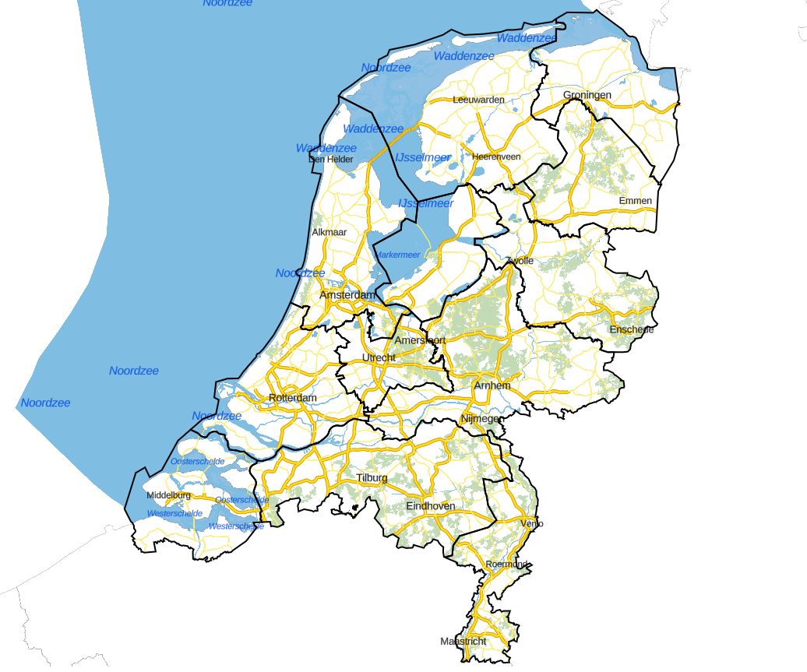
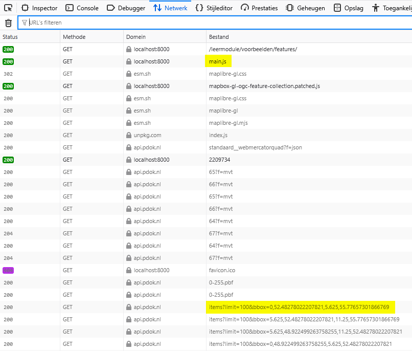
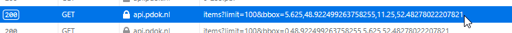
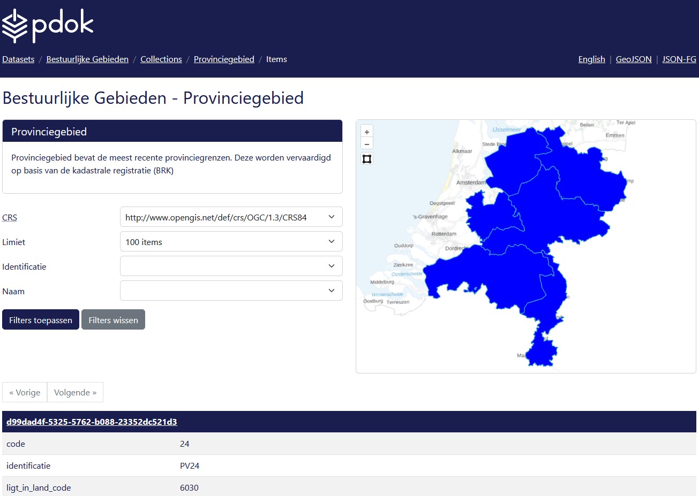
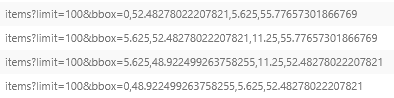
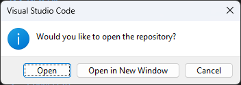
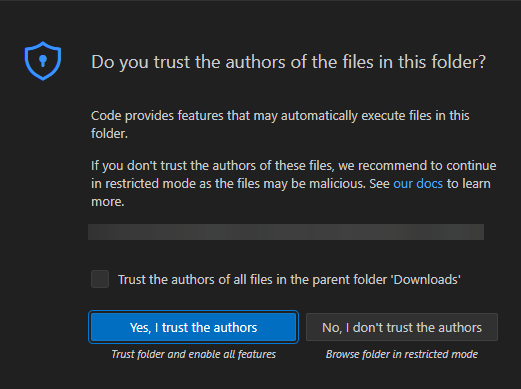

Analyseer een voorbeeldkaart
Zojuist heb je met behulp van de landing page verkend wat je allemaal met OGC API - Features kunt doen. We bekijken nu een interactieve kaart die gemaakt is met behulp van OGC API - Features. Aan de hand hiervan ontdek je hoe een webmap werkt en hoe de componenten van OGC API - Features met elkaar samenwerken.
Bekijk het voorbeeld in een browser
We bekijken nu eerst de voorbeeldwebmap in een webbrowser.
 Bekijk de kaart: ../voorbeelden/features/index.html
Bekijk de kaart: ../voorbeelden/features/index.html
Dit is een web viewer die gemaakt is met de library MapLibre. Deze kaart maakt gebruik van de OGC API – Tiles van de BRT Achtergrondkaart: https://api.pdok.nl/kadaster/brt-achtergrondkaart/ogc/v1
BRT Achtergrondkaart
Kijk voor meer informatie over de BRT Achtergrondkaart en hoe deze wordt ingeladen in het vorige hoofdstuk.

Open de developer tools in je browser.
Refresh de pagina
Open het Netwerk (Network) tabblad
Bekijk de requests die verschijnen in het Netwerktabblad
Merk op dat er onder andere een main.js en items worden ingeladen.

Dubbelklik eens op een items URL in het Netwerktabblad:

Vraag
Waar kom je nu terecht? Welke collectie is dit en welke dataset?
Antwoord
De HTML-weergave van de collectie 'Provinciegebied' van de 'Bestuurlijke Gebieden' OGC API:

Dit is het items endpoint van die collectie:
https://api.pdok.nl/kadaster/bestuurlijkegebieden/ogc/v1/collections/provinciegebied/items
Vraag
Wat zie je in de URL? Welke parameters worden opgegeven en wat doen deze?
| Parameter | Waarde | Effect |
|---|---|---|
limit |
... | ... |
bbox |
... | ... |
Antwoord
| Parameter | Waarde | Effect |
|---|---|---|
limit |
100 |
Limiteer het resultaat tot 100 resultaten |
bbox |
5.625,48.922499263758255,11.25,52.48278022207821 |
Geef alleen resultaten tussen deze coördinaten |
Ga weer terug naar de webmap en bekijk nog eens de requests die worden afgevuurd bij het laden van de webmap.
Als het goed is, zie je meerdere requests (URL's) met het woord item erin.
Vraag
Wat is het verschil tussen deze URL's? Analyseer goed de parameters die worden opgegeven in de URL's.
Antwoord
Je ziet waarschijnlijk vier requests (maar dit is afhankelijk van de viewport):

Het verschil is dat er elke keer een andere bounding box wordt opgegeven.
Het verzoek aan de API om features terug te geven is dus door MapLibre in vieren geknipt. De collectie met Provinciegebieden is niet zo'n grote collectie (12 items). Maar bij een grotere collectie is het nodig om een request op te knippen, omdat het aantal features dan groter kan zijn dan het aantal features wat je maximaal mag opvragen.
Zoals je je hopelijk nog weet uit het vorige hoofdstuk, is de limiet voor het in één keer opvragen 10, 100 of 1000 features.
Je kunt op twee manieren één te groot request opknippen in kleinere requests:
- Doe de request en haal de next cursor ID (next page) op. Gebruik dit ID om je volgende request samen te stellen
- Knip de viewport op in verschillende bboxen zodat in elk request alleen features binnen de bbox, dus een klein stukje van de totale dataset, worden opgehaald.
Vraag
Waarom zou je er in een webmap voor kiezen om gebruik te maken van bbox, en niet van next page?
Hint
Kijk eens wat er gebeurt als je de viewport veel kleiner maakt (maak bijvoorbeeld het paneel voor de developertools groter) en refresh dan de pagina. Wat valt je op?
Antwoord
Er worden minder requests gedaan en de bbox is aangepast op basis van de viewport.
Antwoord
Conclusie: bij een webmap is bbox gebruiken handiger dan cursor pagination: je vraagt dan alleen de features op die de gebruiker in zijn viewport ziet, en niets anders. Dat is veel efficiënter en sneller dan alle features opvragen.
Zoek deze collectie op via de landing page in de browser: https://api.pdok.nl/kadaster/bestuurlijkegebieden/ogc/v1
Vraag
Waar vind je URL van de collectie die gebruikt is in het voorbeeld?
Antwoord
Er zijn twee manieren om de items URL van de collectie Provinciegebied te vinden: 1. Ga naar 'Collections', en vervolgens naar 'Provinciegebied', en klik tot slot op 'Features'. 2. Ga naar de OpenAPI Specification en kopieer de URL van deze collectie onder 'Features'.
Voor een collectie is dus de volgende URL gebruikt:
https://api.pdok.nl/kadaster/bestuurlijkegebieden/ogc/v1/collections/{collection}/items?limit={limit}&bbox={bbox}
Door MapLibre wordt daar een bbox aan toegevoegd, bijvoorbeeld:
https://api.pdok.nl/kadaster/bestuurlijkegebieden/ogc/v1/collections/provinciegebied/items?limit=100&bbox=5.625,48.922499263758255,11.25,52.48278022207821
Hoe is deze URL precies opgebouwd?
| Template | Voorbeeld | Beschrijving |
|---|---|---|
https://api.pdok.nl/kadaster/bestuurlijkegebieden/ogc/v1/ |
https://api.pdok.nl/kadaster/bestuurlijkegebieden/ogc/v1/ |
Landing page |
collections |
collections |
Dataset Feature collections |
{collection} |
provinciegebied |
Naam van de collectie |
limit={limit} |
100 |
Hoeveel features er in één keer worden opgevraagd |
bbox={bbox} |
15.625,48.922499263758255,11.25,52.48278022207821 |
Bounding box waarbinnen de resultaten moeten vallen |
Kijk nog eens in het vorige hoofdstuk als je dit nog niet helemaal begrijpt.
Zie voor meer informatie de OGC API workshop.
Bekijk het voorbeeld in een code-editor
We gaan nu de code van dichtbij bekijken. Hiervoor ga je onze git repository clonen.
Info
Dit onderdeel heeft overlap met Analyseer een voorbeeldkaart in het OGC API - Tiles onderdeel. Heb je dit al gedaan, ga dan hier verder.
Maak gebruik van een code-editor of IDE naar keuze om code te bekijken en uit te voeren.
Wij suggereren twee verschillende aanpakken: in een IDE werken of werken met een file manager en een teksteditor.
Hieronder volgt de uitleg voor Visual Studio Code en de meer klassieke aanpak. Maar uiteraard kun je zelf ook een andere IDE of een andere aanpak gebruiken.
- Open VSCode
-
Klik op 'Clone Git Repository'

Gebruik daarbij de volgende URL: https://github.com/PDOK/leermodule-ogc-api

-
Kies een locatie op jouw schijf om de repository te downloaden en klik op 'Select as Repository Destination'
-
Wacht tot de repository is gedownload
-
Klik op 'Open':

-
Klik op 'Yes, I trust the authors':

-
Bekijk de bestanden in de Explorer (linkertabblad)
De voorbeeldcode bevindt zich in
docs/voorbeelden/tiles -
Maak in de repository een nieuwe folder aan, en zet daarin een kopie van de voorbeeldcode.
Op die manier hou je het voorbeeld schoon en kun je daar altijd op teruggrijpen.
-
Zet een lokale test web server op in de folder die je zojuist hebt gemaakt:
Open een Terminal (View -> Terminal) en voer uit:
cd %jouwfolder python -m http.serverVervang
%jouwfolderdoor de locatie van de folder waar jij de voorbeeldcode naartoe hebt gekopieerd -
Ga in je webbrowser naar
localhost:8000om het voorbeeld te bekijken.
- Ga naar de repository op GitHub: https://github.com/PDOK/leermodule-ogc-api
-
Klik op 'Code' en vervolgens op Download ZIP

-
Pak de zip uit op jouw schijf
-
Bekijk de bestanden in een File explorer
De voorbeeldcode bevindt zich in de folder
docs/voorbeelden/tiles -
Maak in de repository een nieuwe folder aan, en zet daarin een kopie van de voorbeeldcode.
Op die manier hou je het voorbeeld schoon en kun je daar altijd op teruggrijpen.
-
Open een commandline
-
Zet een lokale test web server op in de folder die je zojuist hebt gemaakt:
cd %jouwfolder python -m http.serverVervang
%jouwfolderdoor de locatie van de folder waar jij de voorbeeldcode naartoe hebt gekopieerd -
Ga in je webbrowser naar localhost:8000 om het voorbeeld te bekijken.
Je kunt de code vervolgens bewerken in een teksteditor zoals Notepad++ of Sublime Text.
Bekijk nu ../voorbeelden/features/index.html in de browser
Laten we nu eens de code bekijken in een editor:
Bekijk ..\voorbeelden\features\index.html
Bekijk ..\voorbeelden\features\main.js
Als het goed is, zie je in de code van index.html een div met als id map.
In main.js zie je dat er bij container dat er naar diezelfde map wordt verwezen. In dit javascript bestand wordt allereerst de maplibre-gl library geïmporteerd. Daarna wordt de kaart gedefinieerd:
| Variabele | Beschrijving |
|---|---|
container |
map object in index.html |
style |
verwijst naar een json-bestand, waarin wordt gedefinieerd hoe de tiles gevisualiseerd worden https://api.pdok.nl/kadaster/brt-achtergrondkaart/ogc/v1/styles/standaard__webmercatorquad?f=json |
center |
bepaalt het startmiddenpunt van de kaart (x- en y-coördinaten) |
zoom |
bepaalt het startzoomlevel van de kaart |
minZoom |
bepaalt het maximale niveau dat je mag uitzoomen |
maxZoom |
bepaalt het maximale niveau dat je mag inzoomen |
Info
Vanaf regel 13, map.on('load' behandelen we [verderop(<#features>)].
Merk op dat je de URL naar de tegels zelf niet ziet in main.js. Die URL wordt namelijk in de style json aangeroepen. De main.js roept de style json aan en die roept vervolgens de bron van de tiles aan. De style json bepaalt ook hoe die tiles weergegeven moeten worden.
De bron van de tiles is in dit geval dus https://api.pdok.nl/kadaster/brt-achtergrondkaart/ogc/v1/tiles/WebMercatorQuad/{z}/{y}/{x}?f=mvt
Styles en Tiles
Zie voor meer informatie over Styles en Tiles en de precieze werking daarvan het onderdeel OGC API - Tiles
Experimenteer met de viewer
Experimenteer eens met de variabelen in main.js. Laten we eens wat willekeurige waardes invullen en kijken wat deze variabelen precies doen.
Pas zelf in main.js de volgende waardes aan en kijk wat er gebeurt in jouw webmap:
centerzoomminZoommaxZoom
Hint: wat kun je het beste invullen voor elke variabele?
| Variabele | Voorbeeld | Beschrijving |
|---|---|---|
center |
[5.9623,52.2118] voor het hoofdkantoor van het Kadaster |
Coördinaten van het middelpunt in Long-Lat coördinaten (let op de volgorde). Je kunt dit opzoeken met bijvoorbeeld https://vibhorsingh.com/boundingbox/ |
zoom |
0 t/m 22 |
Het initiële zoomniveau (als de gebruiker de webmap opent) |
minZoom |
0 t/m 22 |
Het maximale zoomlevel dat de gebruiker kan uitzoomen |
maxZoom |
0 t/m 22 |
Het maximale zoomlevel dat de gebruiker kan inzoomen |
Lees hier meer over in de documentatie van MapLibre.
Hopelijk heb je door te experimenteren ontdekt wat deze parameters precies doen.
Features
Laten we nu kijken hoe in het voorbeeld kaartlagen (collecties) uit een OGC API - Features worden toegevoegd.
In main.js wordt op regel 2 de OGCFeatureCollection plugin ingeladen. Deze hebben we lokaal opgeslagen in './mapbox-gl-ogc-feature-collection.patched.js'
De oorspronkelijke bron van deze plugin is: https://github.com/mkeller3/mapbox-gl-ogc-feature-collection
Bekijk main.js vanaf regel 13
Met dit stuk code wordt een OGC API - Features collectie toegevoegd en weergegeven in de kaart.
Allereerst wordt met de functie new OGCFeatureCollection een bron gedefinieerd en ingeladen vanuit de url https://api.pdok.nl/kadaster/bestuurlijkegebieden/ogc/v1. De bron noemen we provinciegebiedsource. De bron is een OGC API - Features collectie: 'provinciegebied'
Daarna wordt er met de functie map.addLayer() een kaartlaag toegevoegd aan de kaart, op basis van de bron provinciegebiedsource. We noemen de kaartlaag provinciegebied-outline en geven deze de volgende opmaak:
'paint': {
'line-color': '#000000',
'line-width': 2
}
Dat betekent: een zwarte omlijning van dikte 2.
In onderstaande tabel vatten we samen hoe deze code precies werkt:
| Onderdeel | Variabele | Beschrijving |
|---|---|---|
new OGCFeatureCollection() |
url |
URL van de landing page |
collectionId |
Naam van de collectie die je wilt toevoegen | |
limit |
Aantal features dat per request wordt opgevraagd | |
map.addLayer() |
id |
Zelfgekozen naam voor de kaartlaag |
source |
Naam van de hierboven gedefinieerde bron | |
type |
Type kaartlaag (symbol, line of fill?) | |
paint |
Hoe moet de kaartlaag worden gevisualiseerd? |
Opmaak / visualisatie van kaartlagen
We behandelen het aanpassen van de visualisatie, zoals kleuren en lijndiktes, nu niet. Kijk hiervoor bij Casus - Maak een kaart met OGC API - Tiles
Experimenteer zelf eens met het veranderen van de waardes en kijk wat er gebeurt.
Hint
Vul bijvoorbeeld de naam van een andere collectie in uit de Bestuurlijke Gebieden dataset, of gebruik een andere dataset als bron.
Je hebt nu gezien hoe OGC API - Features aan MapLibre webmaps worden toegevoegd.
Samenvatting
Je hebt nu een voorbeeldkaart bekeken en de werking ervan geanalyseerd. De voorbeeldkaart maakte gebruik van de BRT Achtergrondkaart met de standaardstijl in WebMercator en de collectie 'Provinciegebied' uit de Bestuurlijke Gebieden OGC API - Features. Je hebt gezien hoe MapLibre features kan renderen. En je hebt gezien welke onderdelen hiervoor nodig zijn:
| Naam | Voorbeeld | Beschrijving |
|---|---|---|
| Index | index.html |
HTML-code voor basisinformatie. |
| JavaScript | main.js |
JavaScriptcode voor de functionaliteit van de webmap. |
| Style | https://api.pdok.nl/kadaster/brt-achtergrondkaart/ogc/v1/styles/standaard__webmercatorquad?f=json |
Opmaak van de tegels. Roept één of meerdere tilesets op. |
| OGCFeatureCollection plugin | './mapbox-gl-ogc-feature-collection.patched.js' |
Voegt functionaliteit toe aan MapLibre om OGC API - Features collections in te laden. |
| OGC API - Features collectie | https://api.pdok.nl/kadaster/bestuurlijkegebieden/ogc/v1/collections/provinciegebied | Bron van de featuredata |